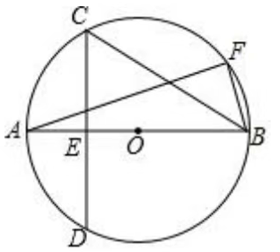
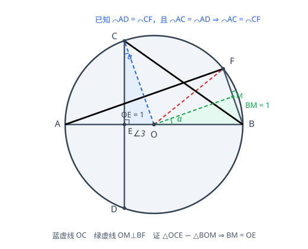

p13 圆中垂径与弧中点求 BC
填空
圆直径垂径定理相似三角形勾股定理
★★★★

📷 点击查看原图
如图，AB 是 ⊙O 的直径，CD 为 ⊙O 的弦，且 CD⊥AB 于点 E，点 F 为圆上一点。若 AE=BF，AD⌢=CF⌢，OE=1，则 BC 的长为 ______。
📌 知识点总结（点击展开／收起）
📌 知识点总结
| 知识点 | 说明 |
|---|
| 垂径定理 | 直径 AB 垂直于弦 CD 于 E ⇒ CE=ED，且 AC⌢=AD⌢ |
| 等弧对等圆心角 | AD⌢=CF⌢ 且 AC⌢=AD⌢ ⇒ ∠AOC=∠COF |
| 相似三角形（AA） | 两个直角三角形若有一组锐角相等，则它们相似 |
| 勾股定理 | 在 Rt△ 中，两直角边的平方和等于斜边的平方 |
✍️ 解题过程
设 ⊙O 的半径为 R。由 OE=1 且 E 在 A、O 之间，可知 AE=R−1，BE=R+1。
第一步：垂径定理
因为 AB 是直径且 CD⊥AB 于 E，由垂径定理：
AC⌢=AD⌢
第二步：由弧相等得到角的关系
已知 AD⌢=CF⌢，结合上式得 AC⌢=CF⌢，于是它们对应的圆心角相等：
∠AOC=∠COF=∠3
因为 A、O、B 共线（直径），∠AOB=180∘，所以：
∠BOF=180∘−∠AOF=180∘−2∠3
第三步：作辅助线，构造相似三角形
📎 辅助线：连接 OC；过圆心 O 作 OM⊥BF 于点 M。

📷 点击查看原图
辅助线构造：连接 OC，过 O 作 OM⊥BF 于 M，证明 △OCE≅△BOM（全等），从而 BM=OE。
由已知 AD⌢=CF⌢，且由第一步垂径定理得 AD⌢=AC⌢，所以 AC⌢=CF⌢，故它们所对的圆心角相等：∠COA=∠COF=∠3。过圆心 O 作 OM⊥BF 于 M（M 为 BF 中点），由垂径定理的推论 OM 平分 ∠BOF，所以：
∠BOM=21∠BOF=21(180∘−(∠AOC+∠COF))=21(180∘−2∠3)=90∘−∠3
在 Rt△OCE 中，∠COE=∠3（即 ∠AOC），所以：
∠OCE=90∘−∠3
于是 ∠OCE=∠BOM。又因为 △OCE、△BOM 都是直角三角形（直角分别在 E、M），且 OC=OB（同为圆的半径），所以：
△OCE≅△BOM(AAS)
💡 考试技巧：如果在考场上遇到这道题是选择题或填空题，辅助线一旦做出来，就大胆假设 △OCE≅△BOM (AAS)，不要去证明，太浪费时间——看过去像全等就是全等，然后直接算，可以算出答案直接选。
第四步：由全等求出 BF=2⋅OE
由 △OCE≅△BOM (AAS)，对应边相等，所以：
BM=OE=1
M 是 BF 的中点，所以：
BF=2⋅BM=2⋅OE=2×1=2
📎 关键：BF=2⋅OE 只由弧相等的几何关系决定，与半径 R 无关。
第五步：由 AE=BF 求半径 R
AE=R−OE=R−1，又已知 AE=BF=2，故：
R−1=2⇒R=3
第六步：勾股定理求 BC
在 Rt△OCE 中，CE=OC2−OE2=R2−1=9−1=22。
因为 CD⊥AB，在 Rt△BCE 中（直角在 E）：